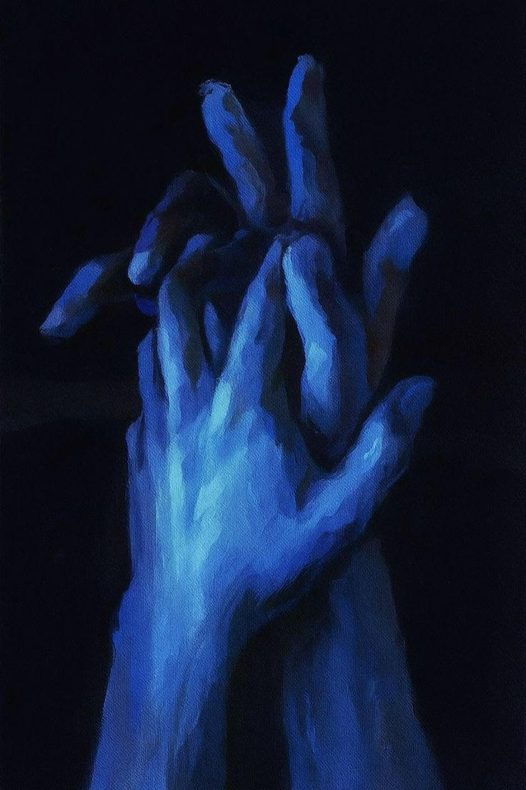

Minha querida estrela..
"O universo também passa por eclipses, aqueles momentos em que a luz se esconde, mas nunca desaparece. Se hoje tudo parece sombra,
lembre-se: a escuridão é apenas um intervalo entre duas constelações." - Queria dizer que alguém legal disse isso, mas na verdade
fui só eu mesmo :(
Estrelas se está aqui então significa que talvez hoje seja um dos dias ruins, um daqueles dias em que tudo está pesado demais é ruim demais.
Primeiro, eu quero que saiba que seja lá o que possa ter acontecido eu te entendo, ou ao menos espero entender. Saiba que eu quero estar ao
seu lado para o que quer que aconteça. Mesmo que as vezes tenhamos momentos difíceis eu ainda estou ao seu lado e sempre estarei. Quero te entender
e entender como sua mente funciona, entender onde dói em você pra que assim eu posso te amar mais lá, sim? Você é minha melhor amiga
acima de tudo e quero estar com você e te ajudar idependentemente de qualquer coisa.
Vamos falar sobre sonhos, ok? A algumas semanas atrás você me contou sobre um sonho que teve que eu estava lá, eu estava no seu sonho e as vezes,
talvez devessemos pensar nisso, talvez ajude a te fazer sentir melhor.
Quando fóssemos para a roça na sua casa poderiamos ficar no seu quarto o dia inteiro. Poderiamos colocar suas playlist para tocar e eu amaria cada
uma dela, ouviria todas e perguntaria sobre as bandas e os cantores só pra te ouvir falando empolgada quando começa a falar adorávekmente rápido
(sem brigar comigo só porque eu disse adorável!!)
Estariamos deitadas na sua cama, você estaria deitada na verdade porque eu estaria tentando plantar bananeiras hiperativas do seu lado. Poderiamos falar
sobre cada coisinha que tivessemos vontade, da mais profunda até a mais idiota e seria bom, seria muito bom. Eu me lembro que me contou que no sonho
você falva sobre algo estando tão animada e percebia que eu estava sorrindo e isso te deixava sorridente e corada (sim, eu sei que você sabe sorrir!)
Poderiamos ouvir música, ver todos os filmes que quisessemos, poderiamso até montar mais algum LEGO carríssimo que eu com certeza brigaria com você por
ter gastado tanto dinheiro em pecinhas minúsculas que furam os pé das pessoas cegas (eu).

Acho que esse, junto com outros sonhos bons que tivemos são para mostrar que mesmo nos momentos em que as coisas ruins acontecem as boas ainda irão existr.
Está tudo bem cairmos, o peso do mundo sempre foi e sempre será grande demais para que apenas uma pessoa consiga segurá-lo nos ombros, o que podemos fazer
é tentar dividir este peso juntas.
Sinto muito, eu sinto muito por algo ter te magoado estrelas, saiba que eu realmente sinto muito, mas que eu quero ajudar, sim? Mesmo que eu não
como fazer isso por várias vezes você me disse que simplesmente estar com você te ajudaria a sentir melhor. Então faremos assim: Fecha os
seus olhos bem fechados e me imageine com você. Eu estou ao seu lado, eu estou com você estamos em um silêncio bom, sua cabeça está no meu ombro
e nossos braçs estão entrelaçados como você disse que gosta de fazer. Quero que respire fundo e só pense em nós sim? pense no máximo de coisas
boas que puder se lembrar, essas coisas boas são Deus lhe dizendo que vai estar tudo bem em breve se tivermos fé, sim? Feche os olhos e imagine
isso comigo (Porque está de olhos abertos, Karen? Obedeça!)
Meu amor, somos apenas eu e você, estamos nessa coisa chamada vida juntas, não estamos? Eu estou e estarei sempre esperando por você se quiser conversar,
se quiser ficar em silêncio ou simplesmente chorar. Quero estar sempre lá por você, estrelas.